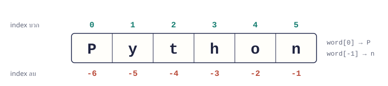

เมื่อจบบทนี้ นิสิตจะทำได้ เข้าถึงตัวอักษรด้วย index ตัดข้อความด้วย slicing และใช้ method ทำความสะอาด/แยก/ประกอบข้อความ
6.1 index: ตำแหน่งของตัวอักษร ตัวอักษรแต่ละตัวมีเลขตำแหน่งเริ่มที่ 0 จากซ้าย และนับถอยหลังได้ด้วยเลขติดลบ (-1 คือตัวสุดท้าย) len() บอกความยาวของข้อความ

ข้อความ Python: index บวก 0 ถึง 5 จากซ้าย และ index ลบ -6 ถึง -1 จากขวา topic_6_1.py
word = "Python"
print (word[0 ], word[5 ])
print (word[-1 ], word[-2 ])
print (len (word))6.2 slicing: ตัดบางส่วน text[start:stop] ตัดตั้งแต่ตำแหน่ง start ถึงก่อน stop (ไม่รวม stop) ละเว้น start หรือ stop ได้
6.3 method ที่ใช้บ่อย string มีคำสั่งในตัว (method) เรียกด้วยจุด เช่น name.upper() method จะคืนข้อความใหม่ ข้อความเดิมไม่เปลี่ยน ต้องเก็บผลไว้ในตัวแปร
topic_6_3.py
name = " hobi JUNG "
clean = name.strip ().title ()
print (clean)
print (name) # ข้อความเดิมไม่เปลี่ยน ผลลัพธ์ Hobi Jung
hobi JUNG 6.4 ตรวจและวนข้อความ ใช้ in ตรวจว่ามีข้อความย่อยอยู่หรือไม่ และใช้ for วนทีละตัวอักษรได้
topic_6_4.py
email = "rm@example.com"
print ("@" in email)
vowels = 0
for ch in "programming" :
if ch in "aeiou" :
vowels += 1
print ("สระ" , vowels, "ตัว" )
ตัวอย่างโปรแกรม
ตัวอย่าง 6.1 จัดรูปชื่อให้เรียบร้อยทำความสะอาดข้อความที่ผู้ใช้พิมพ์มาไม่เรียบร้อย แล้วสร้างชื่อย่อ
example_6_1.py
raw = input ("ชื่อ-นามสกุล: " )
parts = raw.split ()
first = parts[0 ].title ()
last = parts[1 ].title ()
print (f"ชื่อเต็ม: {first} {last}" )
print (f"ชื่อย่อ: {first[0]}.{last[0]}." )
print (f"username: {first.lower()}.{last[:3].lower()}" )ผลลัพธ์ · ตัวที่ขีดเส้นใต้คือค่าที่ผู้ใช้พิมพ์ ชื่อ-นามสกุล: hobi JUNG
ชื่อเต็ม: Hobi Jung
ชื่อย่อ: H.J.
username: hobi.jun อธิบาย split() แบบไม่ใส่ตัวคั่นจะตัดช่องว่างทุกแบบออก ได้ list ของคำtitle() ทำให้ตัวแรกเป็นตัวใหญ่ ที่เหลือเป็นตัวเล็กfirst[0] คือตัวอักษรแรก ส่วน last[:3] คือ 3 ตัวแรก
ตัวอย่าง 6.2 แยกอีเมลหาตำแหน่ง @ แล้วตัดส่วนหน้าและส่วนหลัง
example_6_2.py
email = input ("อีเมล: " ).strip ().lower ()
at = email.find ("@" )
if at == -1 :
print ("อีเมลไม่ถูกต้อง" )
else :
print ("ชื่อผู้ใช้:" , email[:at])
print ("โดเมน:" , email[at + 1 :])ผลลัพธ์ · ตัวที่ขีดเส้นใต้คือค่าที่ผู้ใช้พิมพ์ อีเมล: rm.k@student.ac.th
ชื่อผู้ใช้: rm.k
โดเมน: student.ac.th อธิบาย find("@") คืนตำแหน่งของ @ ถ้าไม่เจอคืน -1email[:at] ตัดถึงก่อน @ และ email[at + 1:] เริ่มหลัง @ตรวจ -1 ก่อนเสมอ เพื่อรับมือข้อความที่ไม่ใช่อีเมล
แบบฝึกหัดท้ายบท
เรียงจากง่ายไปยาก ลองเขียนเองให้ได้ผลลัพธ์ตรงตัวอย่างก่อน แล้วค่อยเปิดเฉลย
ระดับความยาก: ง่าย ปานกลาง ท้าทาย
ข้อ 6.1 ตัวแรกและตัวสุดท้ายง่าย รับคำหนึ่งคำ แล้วแสดงตัวอักษรตัวแรก ตัวสุดท้าย และความยาว
เข้าใจโจทย์
โจทย์ให้ คำ เช่น Bangkok
ต้องหา ตัวแรก B ตัวสุดท้าย k ยาว 7 ตัวอักษรวิธีคิด ตัวแรกคือ [0] ตัวสุดท้ายคือ [-1] ความยาวใช้ len() ตัวอย่างผลลัพธ์ · ตัวที่ขีดเส้นใต้คือค่าที่ผู้ใช้พิมพ์ คำ: Bangkok
ตัวแรก B ตัวสุดท้าย k ยาว 7 ตัวอักษร
ข้อ 6.2 palindromeง่าย ตรวจว่าคำที่พิมพ์อ่านกลับหลังแล้วเหมือนเดิมหรือไม่ (ไม่สนตัวพิมพ์เล็ก/ใหญ่)
เข้าใจโจทย์
โจทย์ให้ คำ เช่น Level
ต้องหา Level อ่านกลับหลังได้เหมือนเดิม: Trueวิธีคิด แปลงเป็นตัวพิมพ์เล็กด้วย lower() กลับหลังด้วย [::-1] เทียบด้วย == ตัวอย่างผลลัพธ์ · ตัวที่ขีดเส้นใต้คือค่าที่ผู้ใช้พิมพ์ คำ: Level
Level อ่านกลับหลังได้เหมือนเดิม: True
ข้อ 6.3 นับสระปานกลาง รับประโยคภาษาอังกฤษ แล้วนับจำนวนสระ a, e, i, o, u (ทั้งตัวเล็กและตัวใหญ่)
เข้าใจโจทย์
โจทย์ให้ ประโยค เช่น Python Is Fun
ต้องหา มีสระ 3 ตัววิธีคิด แปลงเป็นตัวเล็กก่อน วนทีละตัวอักษร ตรวจด้วย ch in "aeiou" แล้วนับ ตัวอย่างผลลัพธ์ · ตัวที่ขีดเส้นใต้คือค่าที่ผู้ใช้พิมพ์ ประโยค: Python Is Fun
มีสระ 3 ตัว
ข้อ 6.4 ทำ slug สำหรับ URLปานกลาง แปลงหัวข้อบทความเป็น slug: ตัดช่องว่างหัวท้าย เป็นตัวเล็ก และเชื่อมคำด้วย -
เข้าใจโจทย์
โจทย์ให้ หัวข้อ เช่น Learn Python Basics
ต้องหา learn-python-basicsวิธีคิด lower() ทำเป็นตัวเล็กsplit() แยกคำ (ช่องว่างซ้ำหายไปเอง)"-".join(...) เชื่อมคำตัวอย่างผลลัพธ์ · ตัวที่ขีดเส้นใต้คือค่าที่ผู้ใช้พิมพ์ หัวข้อ: Learn Python Basics
learn-python-basics
ข้อ 6.5 ซ่อนเบอร์โทรท้าทาย รับเบอร์โทร 10 หลัก (อาจมีขีด) แล้วแสดงแบบซ่อน เหลือเฉพาะ 4 ตัวท้าย
เข้าใจโจทย์
โจทย์ให้ เบอร์ เช่น 081-234-5678
ต้องหา ******5678วิธีคิด ลบขีดด้วย replace("-", "") ตรวจว่ายาว 10 ตัวและเป็นตัวเลขทั้งหมดด้วย isdigit() สร้าง "*" * 6 ต่อด้วย 4 ตัวท้าย [-4:] ตัวอย่างผลลัพธ์ · ตัวที่ขีดเส้นใต้คือค่าที่ผู้ใช้พิมพ์ เบอร์โทร: 081-234-5678
******5678
ข้อ 6.6 นับคำในประโยคท้าทาย รับประโยค แล้วแสดงจำนวนคำ คำที่ยาวที่สุด และประโยคที่ขึ้นต้นแต่ละคำด้วยตัวใหญ่
เข้าใจโจทย์
โจทย์ให้ ประโยค เช่น python makes programming fun
ต้องหา จำนวนคำ 4, คำยาวสุด programming, และ Python Makes Programming Fun วิธีคิด split() ได้ list ของคำ แล้ว len() นับวนหาคำที่ len() มากที่สุด title() ทำตัวแรกของทุกคำเป็นตัวใหญ่ตัวอย่างผลลัพธ์ · ตัวที่ขีดเส้นใต้คือค่าที่ผู้ใช้พิมพ์ ประโยค: python makes programming fun
จำนวนคำ: 4
คำยาวสุด: programming
Python Makes Programming Fun
📝 เก็บคะแนนท้ายบท มีคะแนน
🔐 Login ด้วยอีเมลมหาวิทยาลัย @msu.ac.th เท่านั้น
คำถามท้ายบทที่ 6 (Quiz) · 5 คะแนน · ส่งได้ครั้งเดียว — ทำตามลำดับ 2 ขั้น
🙋
1 เช็คชื่อก่อนสอบเช็คชื่อเข้าเรียนในคาบ — ไม่ได้เช็คชื่อ = ไม่ได้คะแนนคำถามท้ายบทนี้
เช็คชื่อ ↗
📝
2 ทำ Quiz บทที่ 6 (Google Form)ต้องใช้ รหัส Quiz ที่อาจารย์บอกในห้องเรียน จึงจะทำส่วนถัดไปได้
เปิด Quiz บทที่ 6 ↗
แบบฝึกหัดท้ายบทด้านบนไม่เก็บคะแนน · ดูกติกาคะแนนทั้งหมดที่ ภาคผนวก A · เกณฑ์คะแนนและคะแนนนิสิต